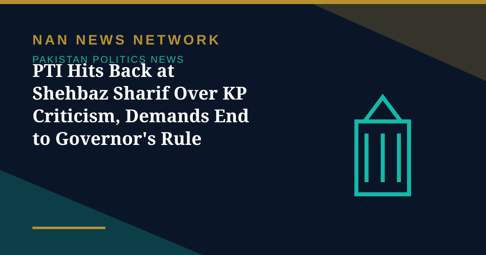

PTI Hits Back at Shehbaz Sharif Over KP Criticism, Demands End to Governor's Rule

Pakistan Tehreek-e-Insaf on Saturday launched a sharp attack on Prime Minister Shehbaz Sharif after he criticised the party's 13-year governance in Khyber Pakhtunkhwa at a PML-N parliamentary party meeting, Business Recorder reported on November 1.
What the PTI said
The party said the prime minister had no moral authority to lecture others on democracy, governance or public service, describing his premiership, in its words, as the product of a stolen mandate and backdoor deals, and accusing him of electoral manipulation and political engineering. It also said the Sohail Afridi-led provincial government had allocated substantial funds for police vehicles and operational requirements, but that federal institutions had failed to provide essential modern equipment. These are the PTI's claims, reported as its response, not findings by an independent body.
The demands that followed
The PTI condemned the continued detention of its founder Imran Khan and his wife, Bushra Bibi, and demanded their release alongside all political prisoners, alleging that restrictions on political meetings and access to lawyers reflected fear of the party's popularity. It called for the withdrawal of governor's rule and emergency measures, restoration of the elected Khyber Pakhtunkhwa government, release of outstanding provincial funds and the province's rightful National Finance Commission share, reversal of controversial constitutional amendments, and fresh, free and fair general elections.
Sources: Business Recorder, November 1, 2026
More on Pakistan Politics News
- China's CPC Minister Liu Haixing Arrives in Islamabad on First Official Visit
- PPP Courts Opposition to Join 30-Member Electoral Reforms Committee
- National Assembly Unanimously Passes Workplace Harassment Resolution as Parliament Is Prorogued
- National Assembly Passes Four Government Amendment Bills by Majority Vote
- Opposition Signals Willingness to Join Electoral Reforms Committee After PPP Outreach
- National Assembly Session Suspended After Speaker Finds House Lacks Quorum
- Pakistan Proposes Parliamentary Friendship Group With Turkmenistan
- Lahore High Court Judge Mohsin Akhtar Kayani Resigns, Citing Executive Grip on Judiciary
- Pakistan Says Afghan Firing Kills One in South Waziristan Border District
- Pakistan Marks Kashmir Black Day With Rallies Across the Country
- National Assembly Passes Seven Private Members' Bills, Sends Six to Committees
- Pakistan Strongly Condemns Houthi Missile Attacks Near Makkah and Madinah
- Pakistan, Saudi Arabia and Turkiye Reported to Hold Tehran Talks on De-escalation
- Pakistan LPG Shortage Worsens as Iran Border Crossings Close
- Pakistan Ends Machine-Readable Passports and Switches Fully to E-Passports
- Pakistan Calls for a Fairer Global Order at the United Nations